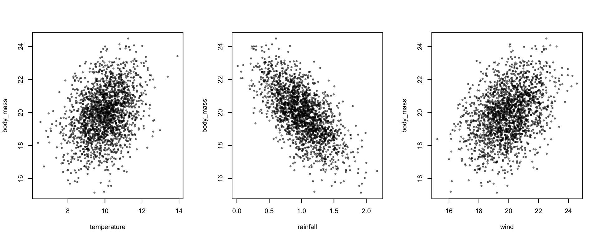

1.1 Simple Linear Model
We will start simulating data without any hierarchical structure, i.e. everything varies at the level of the observation. Let’s imagine a situation where body mass is affected by some environmental variables - temperature, rainfall and wind. We can write this out in the form of a linear model:
\[ y_i = \beta_0 + \beta_1 x_{1i} + \beta_2 x_{2i} + \beta_3 x_{3i} + \epsilon_i \]
, where each observation (denoted by the index \(i\)) of our response variable (\(y_i\)) is the sum of an intercept (\(\beta_0\); value of the response when the predictor variables are all 0), the associated value of our predictor variables (\(x_{1i}\), \(x_{2i}\), \(x_{3i}\); which also vary at the level of the observation), each with a certain magnitude and direction of their effect (effect size or slope; \(\beta_1\) etc), and some unexplained, residual variation (\(\epsilon_i\)).
We can write this in more compact notation, \[ y_{i} = \beta_0 + \boldsymbol{x}_{i} \boldsymbol{\beta} + \epsilon_{i} \]
where \(\boldsymbol{x}_{i}\) is a (row) vector of \(x_{1i}\), \(x_{2i}\) \(x_{3i}\) etc, or equivalently row \(i\) in the matrix of predictors \(X\), \[ \boldsymbol{x}_{i} = \begin{bmatrix} x_{1i} & x_{2i} & x_{3i} \end{bmatrix} \] and \(\boldsymbol{\beta}\) is a (column) vector of slopes/effect sizes \[ \boldsymbol{\beta} = \begin{bmatrix} \beta_1 \\ \beta_2 \\ \beta_3 \end{bmatrix} \]
We will use this notation throughout the vignette, as it is a bit more compact, relates most easily the structure of the simulate_population() function, and can incorporate the flexibility needed for the different model structures.
We assume that these predictor variables are multivariate normally distributed, with given means (\(\mu\)) and a covariance structure (\(\Sigma_x\)), and the residuals are normally distributed with a given variance (\(\sigma^2_\epsilon\)) \[ \boldsymbol{x}_i \sim \mathcal{N}(\boldsymbol{\mu}_x, \Sigma_x) \] \[ \epsilon_i \sim \mathcal{N}(0,\sigma^2_\epsilon) \]
where \[ \boldsymbol{\mu}_x = \begin{bmatrix} \mu_{x_1} \\ \mu_{x_2} \\ \mu_{x_3} \end{bmatrix} , \Sigma_x = \begin{bmatrix} \sigma^2_{x_1} & \sigma_{x_1x_2} & \sigma_{x_1x_3}\\ \sigma_{x_1x_2} & \sigma^2_{x_2} & \sigma_{x_2x_3}\\ \sigma_{x_1x_3} & \sigma_{x_2x_3} & \sigma^2_{x_3} \end{bmatrix} \]
The key to simulating data using the squidSim package is correctly specifying the parameters (from the equations above that would be \(\beta_0\), \(\boldsymbol{\beta}\), \(\boldsymbol{\mu}_x\), \(\Sigma_x\), \(\sigma^2_\epsilon\)). These parameters are given to the simulate_population function as a nested list. Within the main parameter list, there are named lists corresponding to different hierarchical levels, containing the parameters for the predictors at that level - here we are just focussing on the observation level (see Section 2 for examples with hierarchical structure). Parameters for the residual must be specified, all other levels are optional (they revert to defaults values; beta=1, mean=0, vcov=1. In addition to the named lists relating to hierarchical levels, a vector for intercepts and a list for interactions can be added. Intercepts are demonstrated in the examples below, and interactions in Section 1.3. Many of the components in the parameter list don’t need to be specified and default values will be created.
Let’s simulate from the above model.
First, we can specify a sample size or data_structure. As we don’t have any hierarchical data structure yet (see Section 2), we have to specify the sample size with the n argument to the simulate_population function (e.g. 2000).
simulate_population(
n=2000,
...
)We can also give the response (\(\boldsymbol{y}\)) variable a name, body_mass (this is not needed, and defaults to y if not specified).
simulate_population(
n=2000,
response_name = "body_mass",
...
)We then need to add in our parameter list:
simulate_population(
n=2000,
response_name = "body_mass",
parameters = list(
...
)
)To fill in our parameter list, lets think about our model \[ y_{i} = \color{red}{\beta_0}+ \color{blue}{\boldsymbol{x}_{i} \boldsymbol{\beta}} + \color{orange}{\epsilon_{i}} \] \[ \boldsymbol{x}_i \sim \mathcal{N}(\boldsymbol{\mu}_x, \Sigma_x) \] \[ \epsilon_i \sim \mathcal{N}(0,\sigma^2_\epsilon) \] or in words:
intercept + observation level predictors + residual
These names correspond to names in our parameter list. To simulate our environmental predictors that vary at the level of the observation, we can use the observation slot in the parameter list, as well as specifying an intercept and residual variance in the intercept and residual slots, respectively.
The global intercept (\(\beta_0\)) is given by specifying an intercept vector in the parameter list e.g.
intercept=10For both observation and residual we create a list containing the respective parameters. For the observation list, we can specify the names of these variables as a vector (these can be anything - I like giving things actual names, but could also be x1, x2 and x3) and, in the simplest case, the \(\beta\) values as a vector.
observation = list(
names = c("temperature","rainfall", "wind"),
beta = c(0.5,-0.3, 0.4)
)By default, these predictors are simulated as i.i.d. unit normals (mean=0, var=1, cov=0), so \[ \boldsymbol{\mu}_x = \begin{bmatrix} 0 \\ 0 \\ 0 \end{bmatrix} , \Sigma_x = \begin{bmatrix} 1 & 0 & 0\\ 0 & 1 & 0\\ 0 & 0 & 1 \end{bmatrix} \]
Note that the order of the names and betas has to match. We can then specify the residual variance, here as 0.8 (but can be anything). vcov refers to the variance-covariance matrix, which for the residuals is only a single variance until we have multiple response variables (Section 3).
residual = list(
vcov = 0.8
)We can then put this all together:
squid_data <- simulate_population(
n=2000,
response_name = "body_mass",
parameters = list(
intercept=10,
observation = list(
names = c("temperature","rainfall", "wind"),
beta = c(0.5,-0.3, 0.4)
),
residual = list(
vcov = 0.8
)
)
)Let’s compare the code back to the model using colors to link equation to code:
\[ y_{i} = \color{red}{\beta_0}+ \color{blue}{\boldsymbol{x}_{i} \boldsymbol{\beta}} + \color{orange}{\epsilon_{i}} \] \[ \color{blue}{\boldsymbol{x}_i \sim \mathcal{N}(\boldsymbol{\mu}_x, \Sigma_x)} \] \[ \color{orange}{\epsilon_i \sim \mathcal{N}(0,\sigma^2_\epsilon)} \]
This generates a squid object, which when run returns a friendly message:
squid_data## Data simulated using squid
##
## /\
## / \
## / /\ \
## \/ \/
## / \
## | |
## | |
## 0 | | 0
## / \____/ \
## { __/( )\__ }
## \___/__\_\/_/__\___/
## / / / / \ \ \ \
## / / / { } \ \ \
## { { / \ / \ } }
## } \ 0 0 / {
## 0_/ { \_0 0_/ } \_0
## \ /
## } {
## / \
## 0 0and contains all our simulation parameters as well as the simulated data. At this point we want to be able to access the simulated data. There are then some further functions which we can use to access the data and simulation parameters. We can extract the simulated data using get_population_data() The generated response is returned, along with simulated predictors and the data structure (not relevant here).
data <- get_population_data(squid_data)
head(data)## body_mass temperature rainfall wind residual squid_pop
## 1 7.737309 -0.2306292 0.3793662 -1.621588 -1.3849315 1
## 2 7.842569 -0.8841745 -0.7383195 -0.787488 -1.6218444 1
## 3 12.069817 0.9715341 0.5082774 1.591818 1.0998057 1
## 4 10.693063 0.1834473 -0.1029349 -0.544928 0.7884305 1
## 5 11.686525 1.6707325 2.0234161 1.895537 0.6999690 1
## 6 9.000434 -2.2209488 0.8709182 1.206219 -0.1103037 1Later on we will explore how to simulate data for multiple populations with the same parameters (Section 1.8). squid_pop is an identifier for the population number, but is not relevant here.
We can plot what we have simulated:
library(scales)
par(mfrow=c(1,3))
plot(body_mass ~ temperature + rainfall + wind, data, pch=19, cex=0.5, col=alpha(1,0.5))
and run a linear model to check that we get back the betas that we simulated:
coef(lm(body_mass ~ temperature + rainfall + wind,data))## (Intercept) temperature rainfall wind
## 9.9650211 0.5232290 -0.3234344 0.3897914We can also check the means and variances of the predictors
predictors <- data[,c("temperature","rainfall","wind")]
colMeans(predictors)## temperature rainfall wind
## 0.012155934 0.004824320 -0.004908366cov(predictors)## temperature rainfall wind
## temperature 0.994203543 0.001712154 0.01044419
## rainfall 0.001712154 1.050196516 -0.01773955
## wind 0.010444186 -0.017739548 1.04555048It’s worth noting that these values are not exactly what we simulated. That is to be expected - simulation involves randomly generating data, which means that here will be stochasticity in the simulated sample, and in our estimates of the underlying parameters.
1.1.1 Adding more information about the predictors
We can also specify the predictors as having different means and variances. In the observation list, mean and vcov specify the means and covariance matrix of the predictors. If the predictors were uncorrelated, we can just specify the variances as a vector (the diagonal elements of the covariance matrix), and the function assumes the covariances are 0 (see section 1.2 for correlated predictors). Below we have three predictors, temperature, rainfall and wind, with means 10, 1 and 20 respectively, variances 1, 0.1 and 2, respectively, and betas 0.5,-3 and 0.4, a residual variance 0.8 and a global intercept of 10:
\[ y_{i} = \beta_0+ \boldsymbol{x}_{i} \boldsymbol{\beta} + \epsilon_{i} \] \[ \boldsymbol{x}_i \sim \mathcal{N}(\boldsymbol{\mu}_x, \Sigma_x) \] \[ \epsilon_i \sim \mathcal{N}(0,\sigma^2_\epsilon) \]
\[ \color{red}{\beta_0=10} , \color{blue}{\boldsymbol{\mu}_x = \begin{bmatrix} 10 \\ 1 \\ 20 \end{bmatrix}} , \color{CornflowerBlue}{\Sigma_x = \begin{bmatrix} 1 & 0 & 0\\ 0 & 0.1 & 0\\ 0 & 0 & 2 \end{bmatrix}} , \color{purple}{\boldsymbol{\beta} = \begin{bmatrix} 0.5 \\ -3 \\ 0.4 \end{bmatrix}} , \color{orange}{\sigma^2_\epsilon=0.8} \]
data <- get_population_data(squid_data)
coef(lm(body_mass ~ temperature + rainfall + wind, data))## (Intercept) temperature rainfall wind
## 10.1958870 0.5141206 -3.1041906 0.3899635library(scales)
par(mfrow=c(1,3))
plot(body_mass ~ temperature + rainfall + wind, data, pch=19, cex=0.5, col=alpha(1,0.5))
Again, we can check that the means and variances of the predictors are being simulated as we think they should be
predictors <- data[,c("temperature","rainfall","wind")]
colMeans(predictors)## temperature rainfall wind
## 10.0376901 0.9913311 19.9980632cov(predictors)## temperature rainfall wind
## temperature 1.000964250 0.007210948 0.01717880
## rainfall 0.007210948 0.098615850 0.01599828
## wind 0.017178798 0.015998285 2.06563781It can be complicated to keep up with how these different values combine to give the mean and variance of the response. To help with this, the simulated_variance() function calculates the expected mean and variance of the response variable, as well as breaking down the contribution of different predictors and hierarchical levels to the these.
simulated_variance(squid_data)## Contribution of the simulated predictors to the mean and variance in the response
##
## Simulated Mean: 20
## Simulated Variance: 2.27
##
## Contribution of different hierarchical levels to grand mean and variance:
## mean var
## intercept 10 0.00
## observation 10 1.47
## residual 0 0.80
##
##
## Contribution of different predictors to grand mean and variance:
## mean var
## intercept 10 0.00
## temperature 5 0.25
## rainfall -3 0.90
## wind 8 0.32
## residual 0 0.80